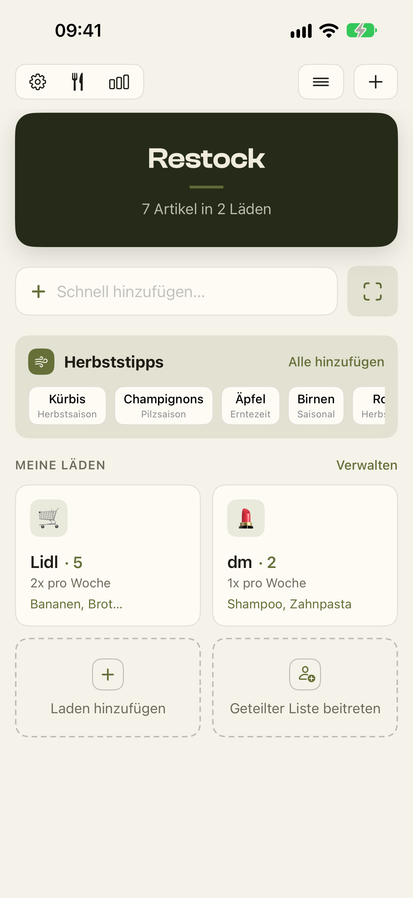
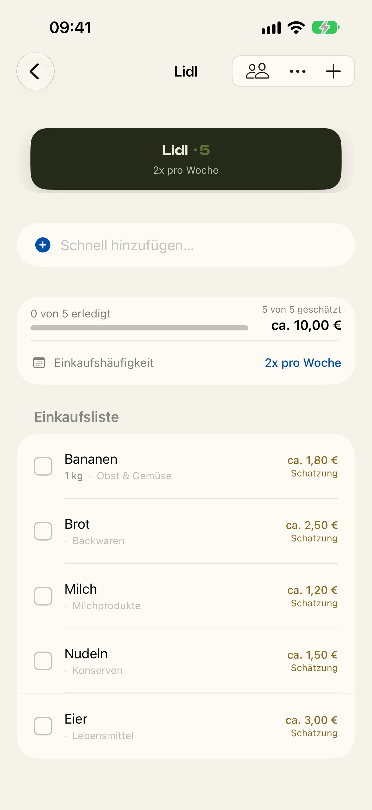
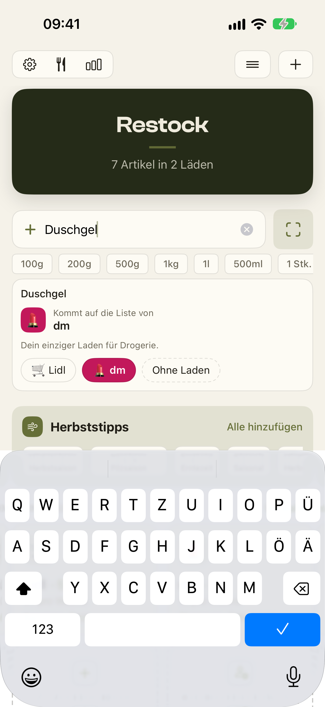
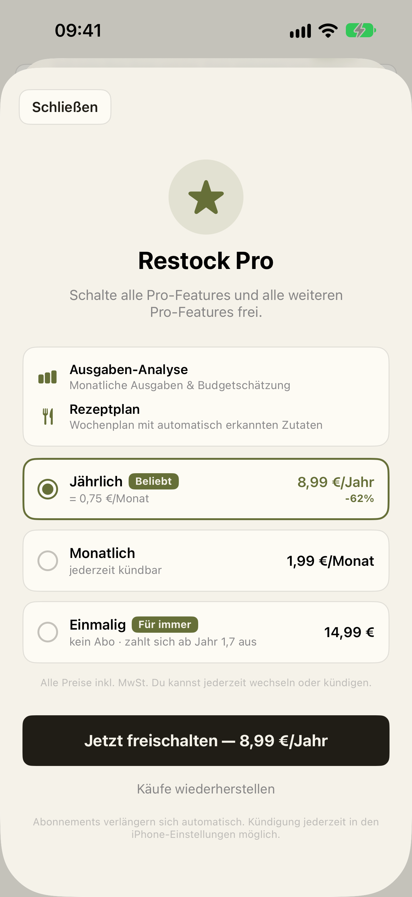
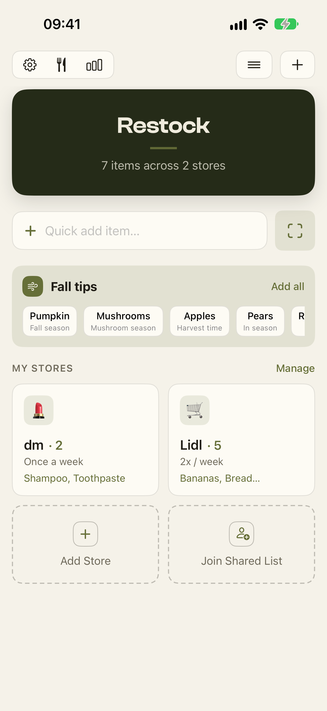
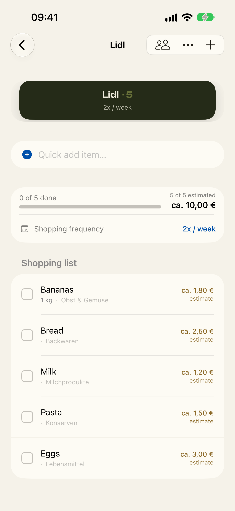
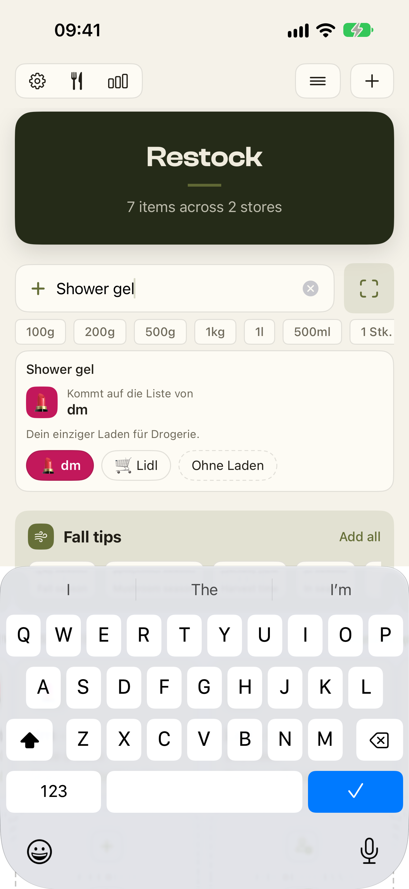
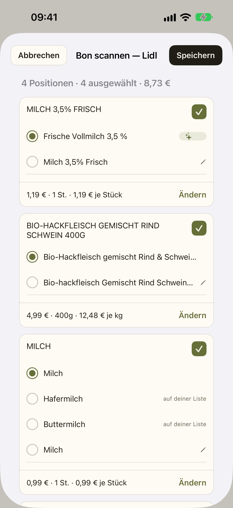
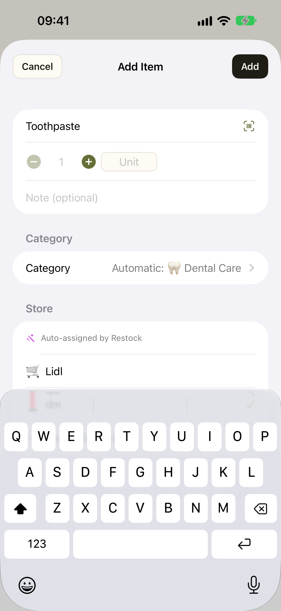
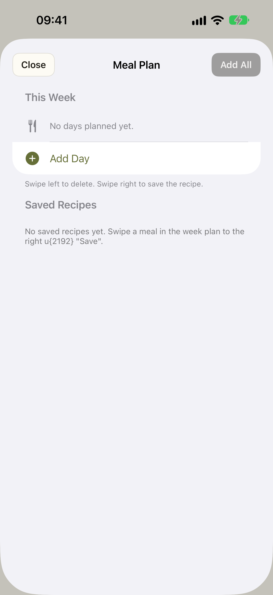

<title>Restock Store-Bilder</title>
<meta name="claude:viewport-fit-sides" content="cover">
<link rel="stylesheet" href="https://fonts.googleapis.com/css2?family=Fraunces:opsz,wght@9..144,600&family=IBM+Plex+Sans:wght@400;600&display=swap">
<style>
/* Layout: je Sprache eine Reihe aus fünf Telefonrahmen, darunter Bildunterschrift und Befund. */
:root {
  --bg: #f1f0ec;
  --surface: #fbfaf6;
  --fg: #1d1c18;
  --muted: #6b6a62;
  --line: #d9d7cd;
  --accent: #5b6b2e;
  --warn: #9a5a00;
  --warn-bg: #f6e8cf;
  --ok: #3d6b2e;
  --font-display: "Fraunces", Georgia, serif;
  --font-body: "IBM Plex Sans", system-ui, sans-serif;
}
@media (prefers-color-scheme: dark) {
  :root:not([data-theme="light"]) {
    --bg: #16160f; --surface: #20201a; --fg: #ecebe3; --muted: #a09f94; --line: #3a3a31;
    --accent: #a9bd6a; --warn: #f0b860; --warn-bg: #3a2c12; --ok: #9bc98a; color-scheme: dark;
  }
}
:root[data-theme="dark"] {
  --bg: #16160f; --surface: #20201a; --fg: #ecebe3; --muted: #a09f94; --line: #3a3a31;
  --accent: #a9bd6a; --warn: #f0b860; --warn-bg: #3a2c12; --ok: #9bc98a; color-scheme: dark;
}
body { background: var(--bg); color: var(--fg); font: 15px/1.5 var(--font-body); padding-block: 24px;
  padding-left: max(16px, env(safe-area-inset-left, 0px)); padding-right: max(16px, env(safe-area-inset-right, 0px)); }
main { max-width: 1180px; margin: 0 auto; display: flex; flex-direction: column; gap: 40px; }
h1 { font: 600 30px/1.15 var(--font-display); margin: 0; text-wrap: balance; }
h2 { font: 600 22px/1.2 var(--font-display); margin: 0; }
p { margin: 0; max-width: 65ch; }
.intro { display: flex; flex-direction: column; gap: 12px; }
.muted { color: var(--muted); }
.box { background: var(--surface); border: 1px solid var(--line); border-radius: 10px; padding: 16px; display: flex; flex-direction: column; gap: 8px; }
.box.warn { background: var(--warn-bg); border-color: var(--warn); }
.box ul { margin: 0; padding-left: 20px; display: flex; flex-direction: column; gap: 4px; }
section { display: flex; flex-direction: column; gap: 16px; }
.row { display: grid; grid-template-columns: repeat(auto-fit, minmax(170px, 1fr)); gap: 20px; }
figure { margin: 0; display: flex; flex-direction: column; gap: 8px; min-width: 0; }
figure img { width: 100%; height: auto; border-radius: 22px; border: 1px solid var(--line); display: block; }
figcaption { font-size: 14px; display: flex; flex-direction: column; gap: 6px; }
figcaption strong { font-weight: 600; }
.tag { display: inline-block; font-size: 12px; font-weight: 600; letter-spacing: .03em; padding: 2px 8px; border-radius: 999px; align-self: flex-start; }
.tag.ok { color: var(--ok); border: 1px solid var(--ok); }
.tag.warn { color: var(--warn); border: 1px solid var(--warn); }
</style>

<main>
  <div class="intro">
    <h1>Restock: Bilder für den App Store</h1>
    <p>Zehn Bilder, fünf je Sprache, alle 1320 × 2868 Pixel (iPhone 17 Pro Max), Uhrzeit 9:41, keine echten Daten. Die Bildunterschriften stehen nur hier und werden nicht ins Bild gebrannt. Hochgeladen ist noch nichts.</p>
  </div>

  <div class="box warn">
    <strong>Das musst du entscheiden: Die englischen Bilder zeigen viel Deutsch.</strong>
    <p>Die App hat für einige Stellen noch keine englischen Texte. Das sieht man ab dem zweiten englischen Bild.</p>
    <ul>
      <li>Bild 2: Kategorien wie „Obst &amp; Gemüse“, „Milchprodukte“.</li>
      <li>Bild 3: Zielkarte („Kommt auf die Liste von“).</li>
      <li>Bild 4: Oberfläche und Bon ganz deutsch.</li>
      <li>Bild 5: Pro-Seite ganz deutsch.</li>
    </ul>
    <p>Außerdem ist der Untertitel der Pro-Seite doppelt, auch auf Deutsch: „Schalte alle Pro-Features und alle weiteren Pro-Features frei.“ Das ist ein kleiner Fehler in der App, in dieser Aufgabe ändere ich daran nichts.</p>
  </div>

  <section>
    <h2>Deutsch</h2>
    <div class="row">
      <figure><figcaption><span class="tag ok">in Ordnung</span><strong>Alle Läden auf einen Blick</strong></figcaption></figure>
      <figure><figcaption><span class="tag ok">in Ordnung</span><strong>Deine Einkaufsliste, nach Laden geordnet</strong></figcaption></figure>
      <figure><figcaption><span class="tag ok">in Ordnung</span><strong>Eintippen, Restock wählt den passenden Laden</strong></figcaption></figure>
      <figure><figcaption><span class="tag ok">in Ordnung</span><strong>Kassenbon scannen, Preise werden gelernt</strong></figcaption></figure>
      <figure><figcaption><span class="tag warn">doppelter Untertitel</span><strong>Restock Pro: einmalig oder als Abo</strong></figcaption></figure>
    </div>
  </section>

  <section>
    <h2>English</h2>
    <div class="row">
      <figure><figcaption><span class="tag ok">in Ordnung</span><strong>All your stores at a glance</strong></figcaption></figure>
      <figure><figcaption><span class="tag warn">Kategorien deutsch</span><strong>Your shopping list, sorted by store</strong></figcaption></figure>
      <figure><figcaption><span class="tag warn">Zielkarte deutsch</span><strong>Type it, Restock picks the right store</strong></figcaption></figure>
      <figure><figcaption><span class="tag warn">ganz deutsch</span><strong>Scan a receipt, prices are learned</strong></figcaption></figure>
      <figure><figcaption><span class="tag warn">ganz deutsch</span><strong>Restock Pro: one-time or subscription</strong></figcaption></figure>
      <figure><figcaption><span class="tag ok">rein englisch</span><strong>Add an item, Restock suggests category and store</strong></figcaption></figure>
      <figure><figcaption><span class="tag warn">Textfehler „u{2192}“</span><strong>Plan your week's meals</strong></figcaption></figure>
    </div>
  </section>
</main>
